Tweet
Tweet
For a long time, most writing in Japan was in classical Chinese, which was read either in the conventional Chinese way, or with Japanese pronunciation. Over a period of about 1,000 years, Chinese characters were adapted in a variety of ways to write the Japanese language. The text below gives you an idea of the similarities and differences between the two writing systems.
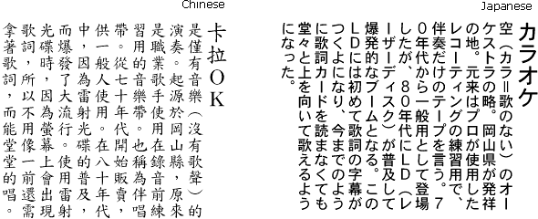
The modern Japanese writing system uses a mix of “syllabaries”: the phonetic character sets are called Hiragana and Katakana, and the ideograms, Chinese in origin, are called Kanji. In normal Japanese writing, Kanji and Hiragana are used, while Katakana is used for words borrowed from the (non-Chinese) foreign languages.
Between 5,000 and 10,000 Chinese characters, or Kanji, are used in written Japanese.
An educated person can read about 10,000 Kanji symbols; the government has published a list of 2,000 that it considers basic. The popular SJIS (Shift-JIS) font has 6,355 Kanji ideographs (and 83 Hiragana and 86 Katakana symbols).
In 1981, the Japanese government introduced the “Joyo Kanjihyo” or “List of Chinese Characters for General Use”, which includes 1,945 regular characters, plus 166 special characters used only for people’s names. All government documents, newspapers, textbooks and other publications for non-specialists use only the Kanji symbols. Writers of other material are free to use whatever Kanji they want.
Most Kanji symbols have two readings: one is derived from Chinese (“on yumi”) and the other is the native Japanese word (“kun yumi”). For example, the native Japanese word for “water” is “mizu”, the Chinese-derived word for water is “sui”. This is somewhat equivalent to the English usage of the word “water” (Anglo-Saxon), “aqua–” (Latin) or “hydro–” (Greek) in different contexts.
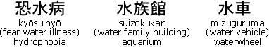
Some Kanji have multiple “on yumi” and “kun yumi” — the first three readings are “on yumi”, the last are “kun yumi”.
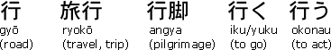
In Chinese, this character is pronounced “xíng” or “háng”.
Some of the Kanji have been simplified, although not always in the same way as characters have been simplified in China!
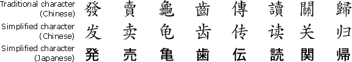
There are also a number of characters (“kokuji”) which were invented in Japan.
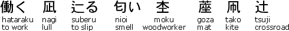
Hiragana syllables developed from Chinese characters. Hiragana was originally called “onnade” or “women’s hand” as it was used mainly by women — men wrote in Chinese characters. By the 10th century, Hiragana was used by everybody.
In early versions of Hiragana, there were often many different characters to represent the same syllable. Over time, the system was eventually simplified so that there was a one-to-one relationship between spoken and written syllables. The present orthography of Hiragana was codified by the Japanese government in 1946.
The Hiragana syllabary consists of 48 syllables and is mainly used to write word endings and native Japanese words for which no Kanji symbols are available, but it is also used to indicate the pronunciation of obscure, archaic and unusual Kanji.
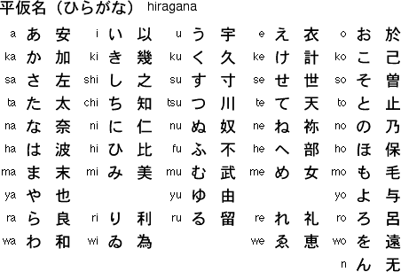
Japanese is written entirely in Hiragana in children’s books and in some text books for foreign learners, but elsewhere Hiragana is combined with Kanji and Katakana.
Additional sounds are represented using diacritics or combinations of syllables.
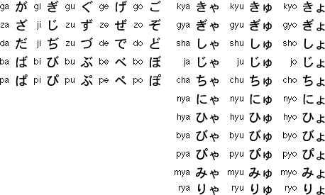
Here’s a text sample in Hiragana.
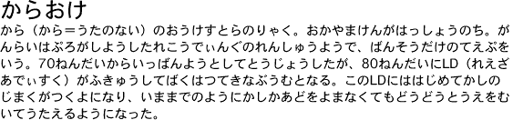
The Katakana syllabary was derived from abbreviated Chinese characters used by Buddhist monks to indicate the correct pronunciations of Chinese texts in the 9th century.
The Katakana syllabary consists of 48 syllables and is mainly used to write non-Chinese loan words, onomatopoeic words, foreign names, in telegrams and for emphasis — the equivalent of bold, italic or uppercase text in English.
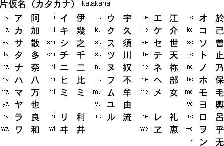
Additional sounds are represented by diacritics or combinations of syllables.
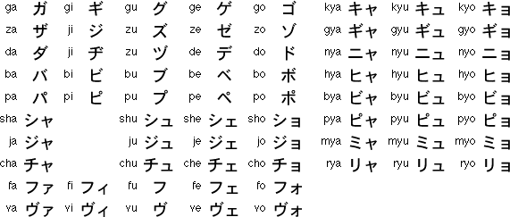
Here’s the same text sample, but this time, it’s in Katakana.
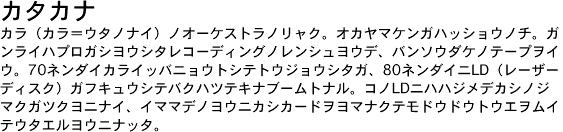
Japanese is generally written vertically and from right to left, but many texts today are written horizontally to permit the inclusion of English words, Arabic numerals and mathematical and chemical formulae.
Which languages can OCR software read? — The history of the alphabets – Latin alphabet — Latin punctuation — Greek alphabet — Cyrillic (Russian) alphabet — Hebrew alphabet — Arabic alphabet — Let’s go East – Chinese alphabet — Japanese alphabet — Korean alphabet — Asian punctuation
Home page — Intro — Scanners — Images — History — OCR — Languages — Accuracy — Output — BCR — Pen scanners — Sitemap — Search — Contact – Feedback